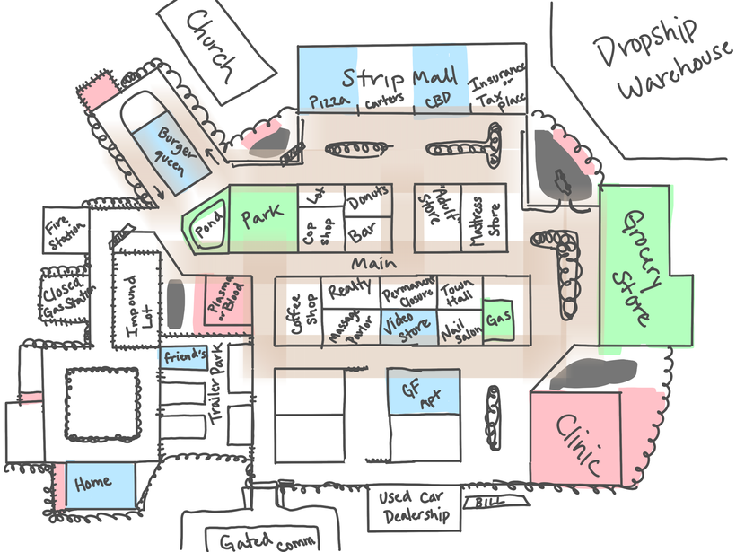

Status Report 1/12/2024 - Vampiric Munchies begins
Hello,
This is Matthew once again, here to discuss what has been going on throughout the past two weeks. I am still deciding weather I want to do these monthly or bi-weekly, but for now I'm gonna try both and just figure it out as I go.
So, to cut to the chase, in the past two weeks I met up with Billy (who made the art assets for Scaling Up Industries) and we have decided to work on another project together. The game I pitched to him was "A game where you are a vampire that has to do tasks for your girlfriend while you have a limited amount of energy and have to suck people's blood to get energy back". The game is planned to be relatively short and we are hoping to get it done before the end of February (early March at the absolute latest).
During that meeting fleshed out ideas and also made a plan for what we wanted to make and how we wanted to make it. Mainly, we designed a map and decided we wanted the setting to be "shithole-hown, USA". Here is that map:
All of the missions will take place in this town and only a few locations will actually be relevant to missions. Meaning only a few locations will actually need a ton of detail. Red areas are where blood can appear, green areas are where you will be able to enter and there will be a detailed interior, blue areas are areas that will have a cut scene or mini game separate from the main map, and orange is kinda a heat-map for where we want NPCs to roam.
Speaking of NPCs roaming, that's actually one of the first things I worked on, and this also shows the progress we have made on the project thus far:

We met on the 7th of January and this was from yesterday, the 11th, so this about 5 days of progress. However, this was my first week back to my college courses from winter break so take the amount of work done with a grain of salt. Also, if your first reaction is "this looks like garbage", trust me, it will get better, this is how all my games look at first lol.
But yeah, to expand on that, I took a break from gamedev during December and it's been kinda hard to get back into swing of working on games consistently, especially with added weight of college classes and stuff. I went through something exactly a year ago between the release of Get Your Coffee and Void In Capital. I guess I am learning that this time of year is just really not great for my process. Not to make excuses or discredit what I'm currently doing as I think objectively anyone can look at Scaling Up Industries and The Pig Pen as better games than Get Your Coffee and Void In Capital, so that is really nice ego boost.
That is also why I am giving myself more time for this project, not only is it quite a large project (maybe even the biggest I've made), but also I don't want to burn out or give up. Working in group is definitely helping as I feel like I have to because I don't want to let Billy down or anyone else who might be involved in this project.
So yeah, that's the project I've started and will be working on. I don't think it's far enough along to release an early build so that is why there won't be one.
Another update is I tried live streaming gamedev:
I think it was a good experiment and really helped me kickstart working on this project when I didn't feel like it, but I get kinda paranoid while I'm livestreaming that I might do or say something stupid, so I probably won't do it often. I might use it as some kind of streak thing where if I know I have a list of things to do I can just crank out, I might do them on live stream so it makes me focus on doing it instead of watching YouTube or whatever.
So yeah, thank you for reading all this if you've gotten this far and thank you for your support. Have a good one.
TL:DR - Starting a new project and I tried livestreaming.